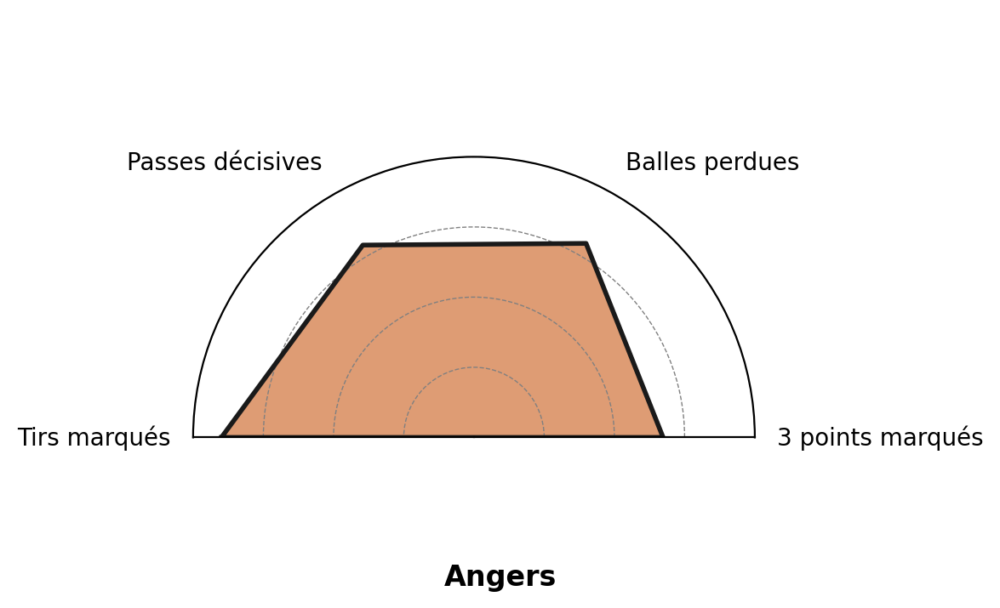
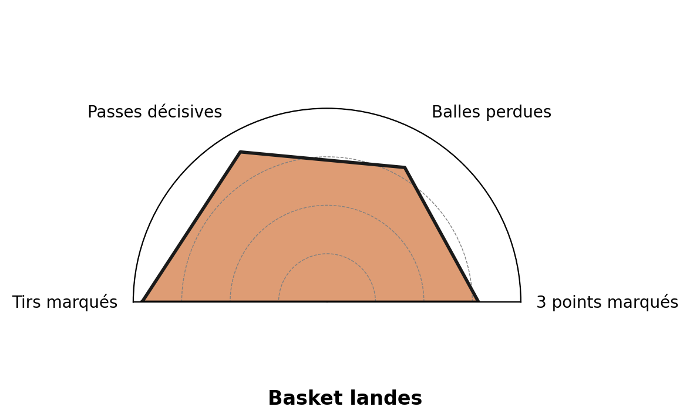
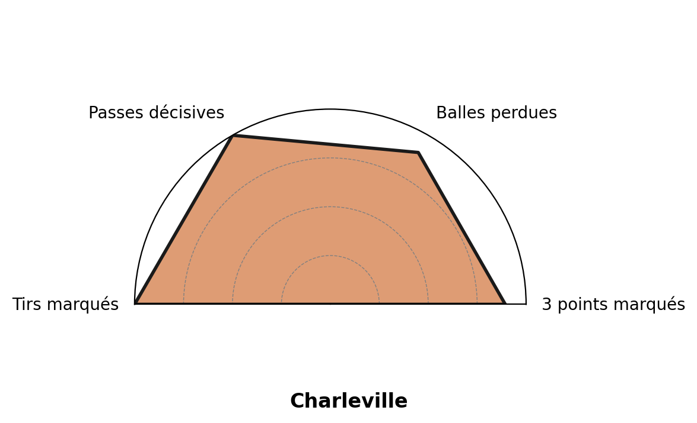
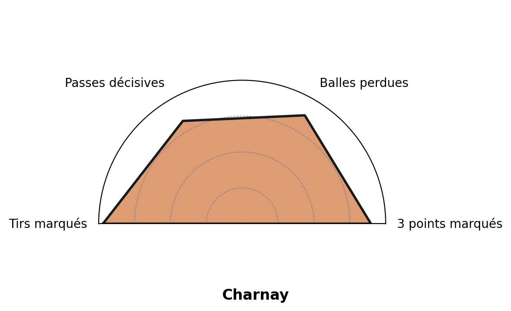
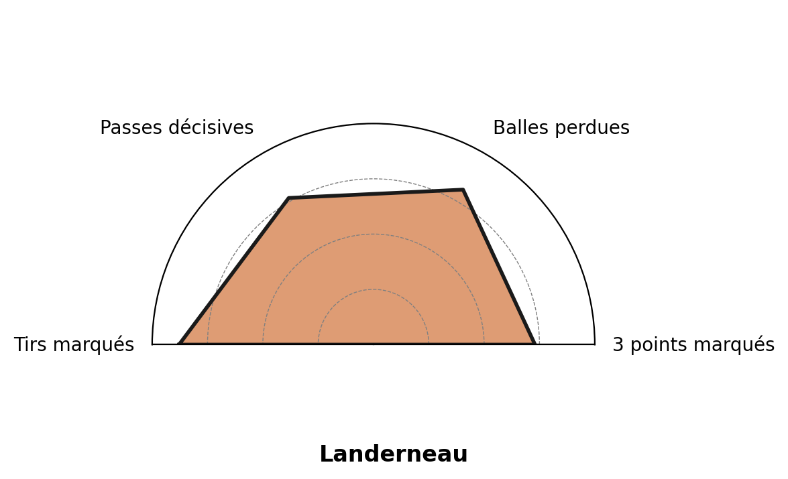
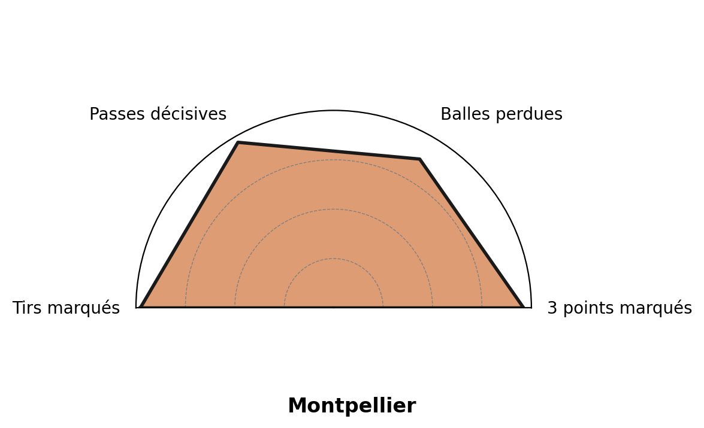
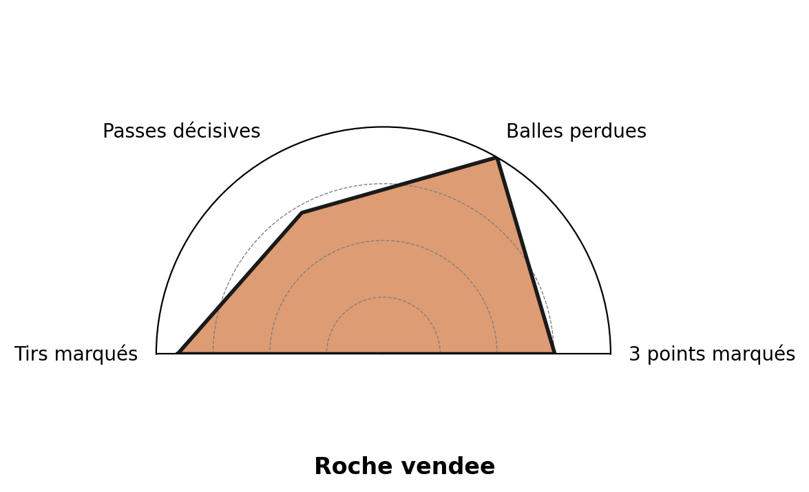
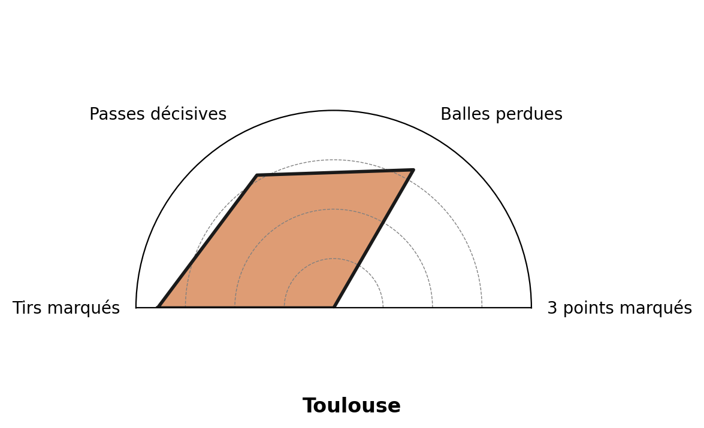
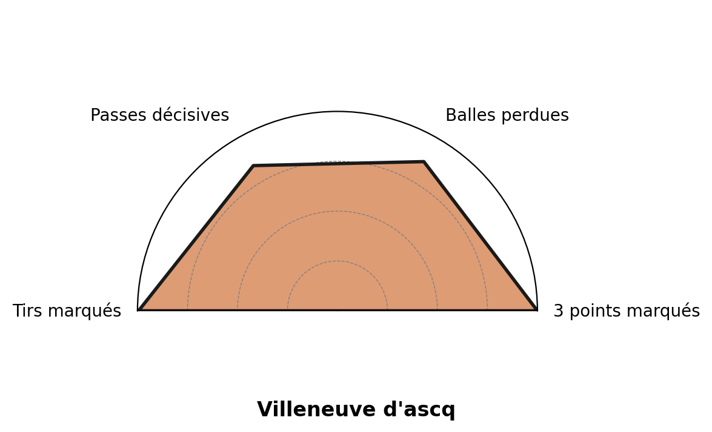

Fiche du parieur · basketball féminin (LFB) · page 1 sur 2
Le profil de l'équipe qui gagne
Constat à froid sur les deux dernières saisons (23-24 et 24-25). Chaque pourcentage est la part de victoires (ou de défaites) parmi les matchs où le critère était rempli. C'est une photo du passé, pas une garantie pour l'avenir.
Les critères à cocher
-
Bonne adresse au tir. Elle marque ses paniers.82%Les 82 % sont calculés sur la base des deux saisons, on a gardé les matchs où les équipes ont le mieux tiré (le tiers le plus adroit). Sur 100 de ces matchs, 82 des équipes ont gagné. Même lecture pour les lignes suivantes.
- Beaucoup de passes décisives. Elle fait circuler la balle.79%
- Peu de ballons perdus. Elle protège la balle.66%
- Joue à domicile.62%
- Peu de 3 points manqués. Critère secondaire.60%
Les signaux d'alerte
Côté défaite : part de défaites quand le critère défavorable est rempli.
- Peu de passes décisives75%
- Adresse au tir faible74%
- Beaucoup de ballons perdus63%
- Joue à l'extérieur56%
Ce qu'on voit en la regardant jouer
- Elle marque beaucoup de paniers à 3 points, souvent sa marque de fabrique.
- Elle récupère beaucoup de ballons sur l'adversaire (interceptions).
- Elle rate peu de tirs, alors qu'une équipe qui perd accumule les tirs manqués.
Le profil de chaque équipe sur 2 saisons
radars par équipe (version intermédiaire, à remplacer par l'export final)
Angers

Basket Landes

Bourges

Charleville

Charnay

Chartres

Landerneau

Lyon

Montpellier

Roche Vendée

Toulouse

Villeneuve d'Ascq
Fiche du parieur · Le profil de l'équipe qui gagne
Constat sur 264 matchs, saisons 23-24 et 24-25